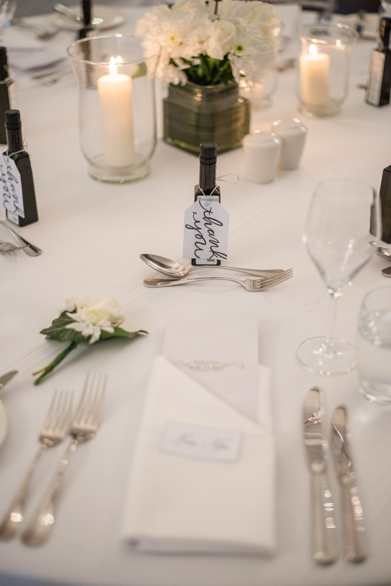
Her favorite colors
Build a palette from outfits, flowers, a favorite place, or a meaningful shade.
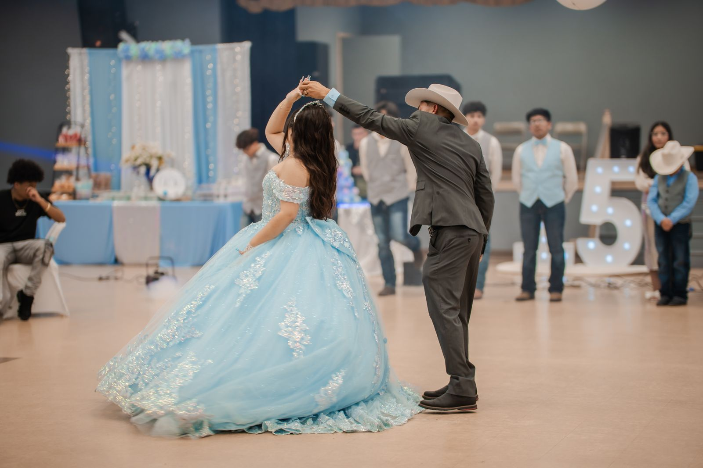
A DAY THAT FEELS LIKE HER
Shape a gathering around her personality, your family traditions, and the moments everyone will remember.
START WITH HER
Choose a few anchors first. The rest of the celebration can grow around them.

Build a palette from outfits, flowers, a favorite place, or a meaningful shade.
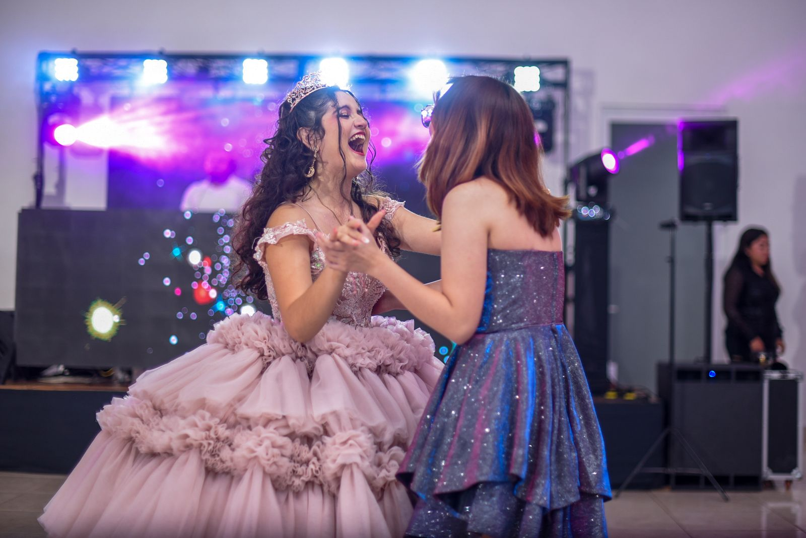
Plan entrances, dances, and a playlist that sounds like her generation and family.
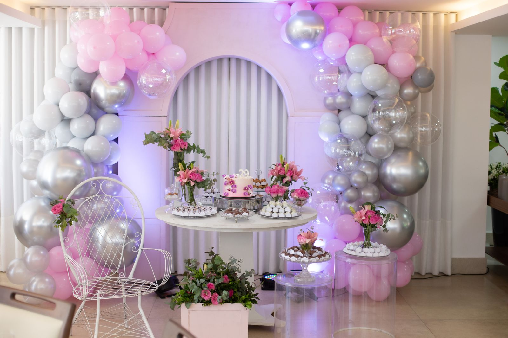
Pick the traditions, people, and small surprises you want guests to notice.
A PERSONAL TOUCH
Tradition and personal style can share the same celebration.
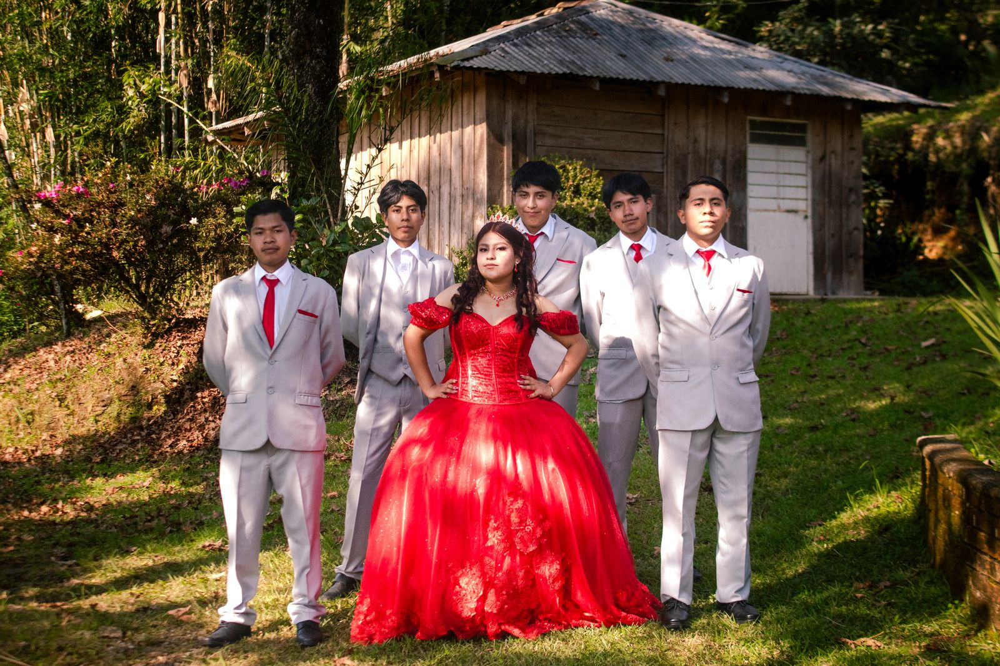
THE EXPERIENCE
Keep decisions manageable while the event takes shape.
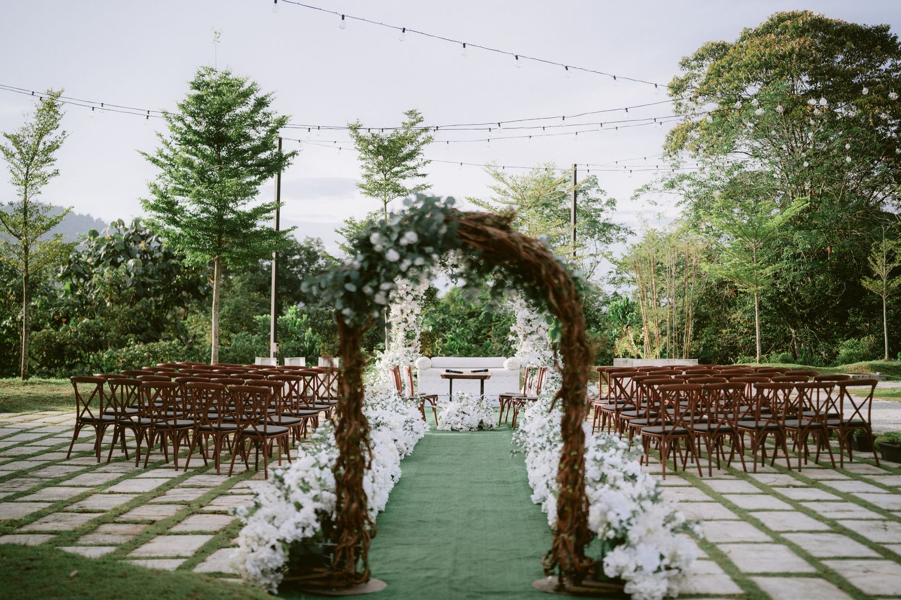
Save visual ideas and note what you like about each one.
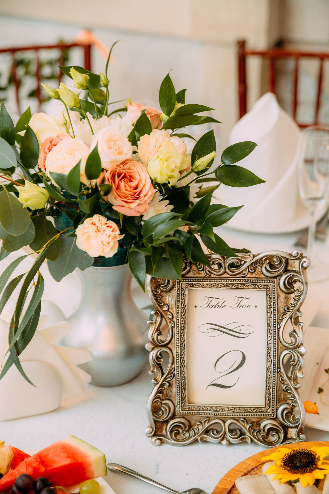
Confirm date, guest estimate, venue needs, and the moments that matter.
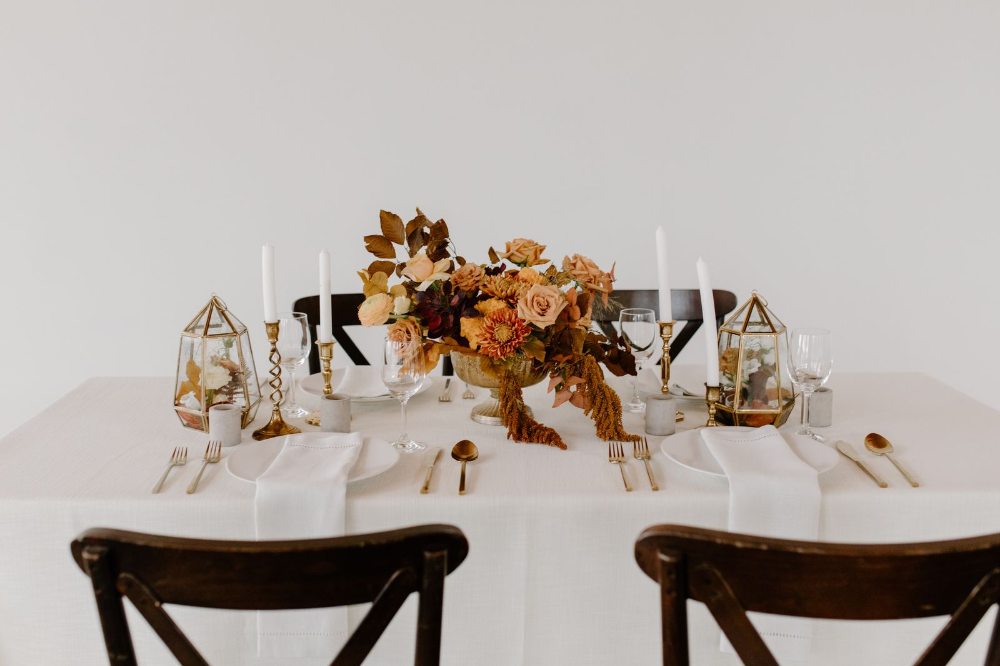
Use a shared timeline so family, venue, and vendors know what happens when.
SETTING THE MOOD
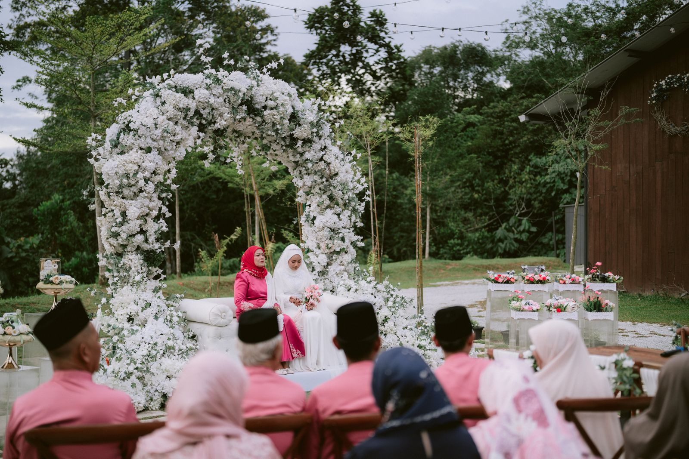
Botanical textures, candlelight, and a relaxed welcome.
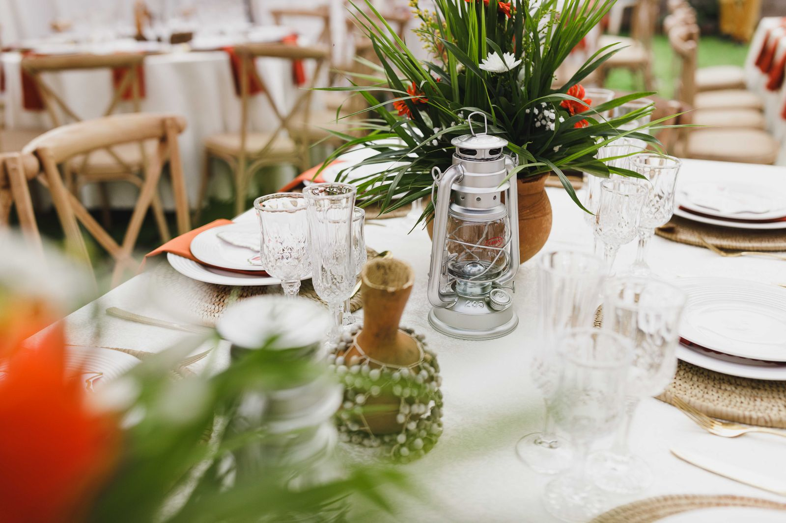
Graphic shapes, a bold entrance, and a bright dance floor.
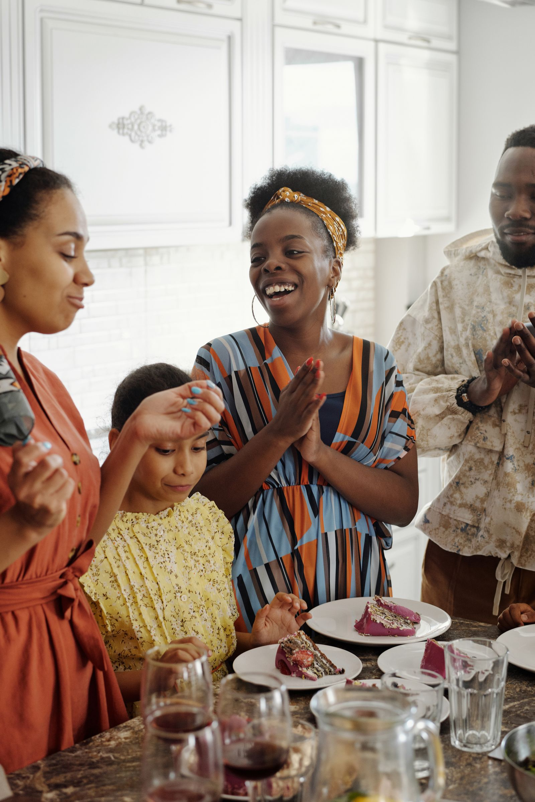
Family symbols and traditions woven into the evening schedule.
READY WHEN YOU ARE
A few notes about style, timing, and guest count are enough to begin.
Share your ideas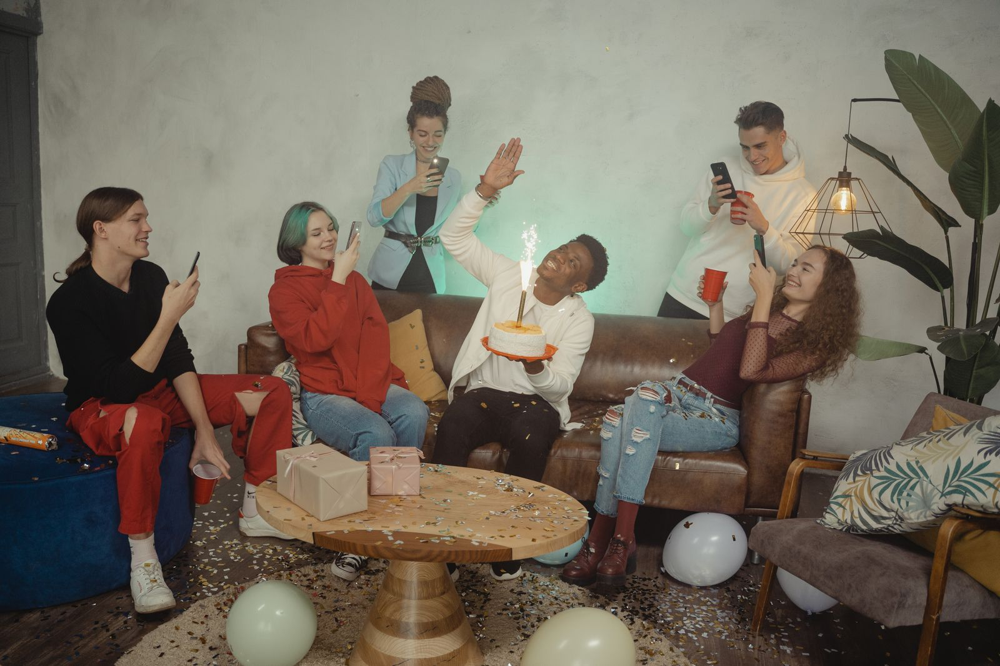